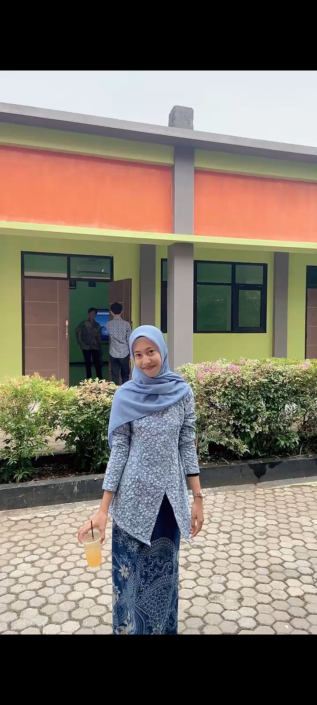

Profil Data Diri
Profil Data Diri

Nama: Tri Oktaviani Masruki
Sekolah: SMKS Kesehatan Yannas Husada Bangkalan
Kelas: XB TLM
Cita-cita: Menjadi Analis Kesehatan
Hobi: Menggambar
Instagram: @trioktavianimasruki
Halo, perkenalkan nama saya Tri Oktaviani Masruki. Saya adalah siswi SMKS Kesehatan Yannas Husada Bangkalan kelas XB TLM. Saya memiliki cita-cita menjadi seorang Analis Kesehatan. Hobi saya adalah menggambar karena dapat melatih kreativitas dan menjadi sarana untuk mengekspresikan ide dan imajinasi.
"Teruslah belajar, berusaha, dan berdoa karena kesuksesan
dimulai dari langkah kecil yang dilakukan setiap hari."